知道理论，仍缺少进入职场的经验。
刚毕业的求职者可能难以回应企业对实践能力的要求；企业也难以找到适合岗位的人。设计关注两方之间的经验与标准差异。
连接两代人的知识与热忱。
从线上交流到线下相遇的跨代互助服务。
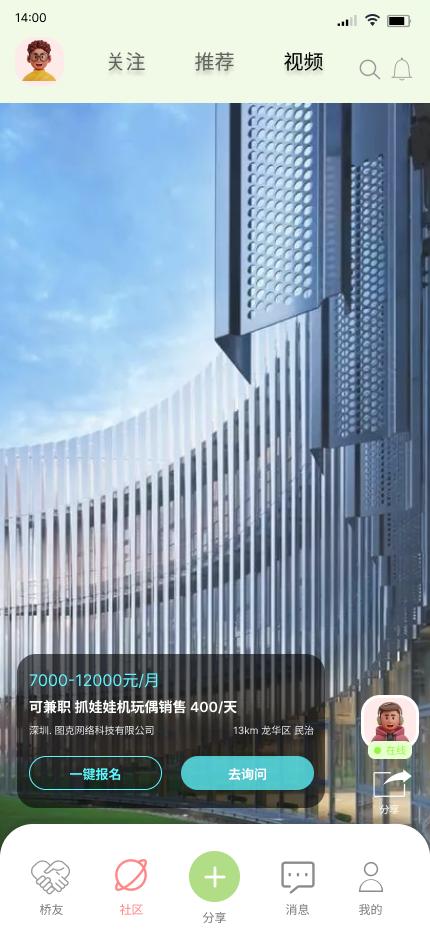
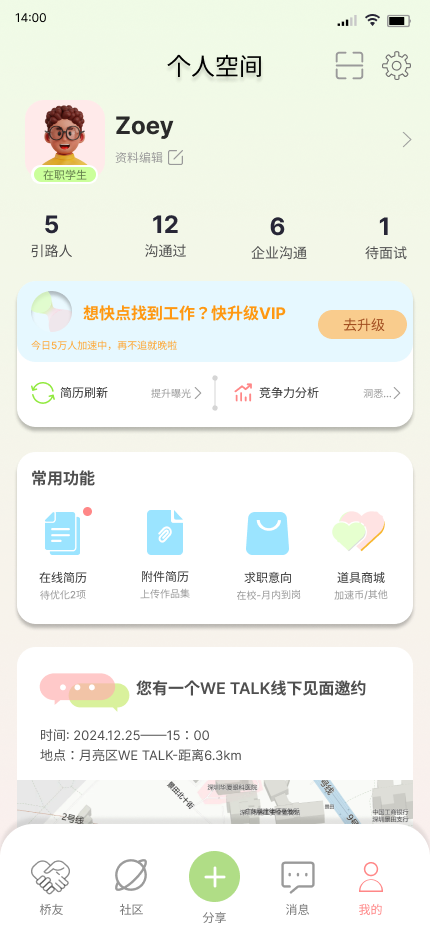
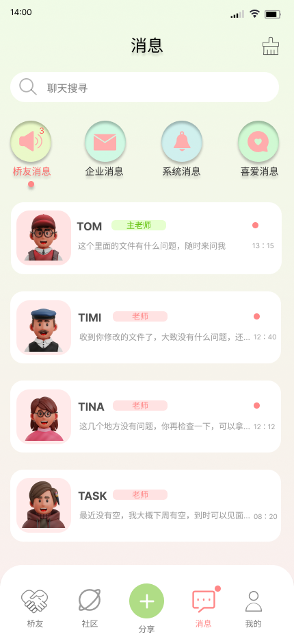
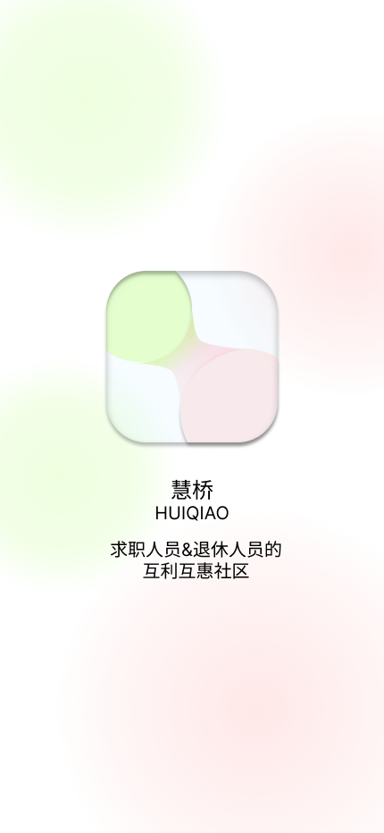
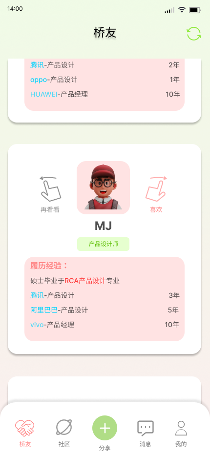
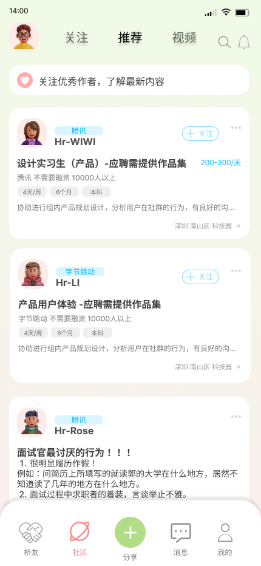
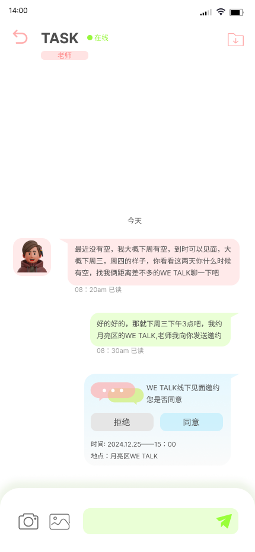
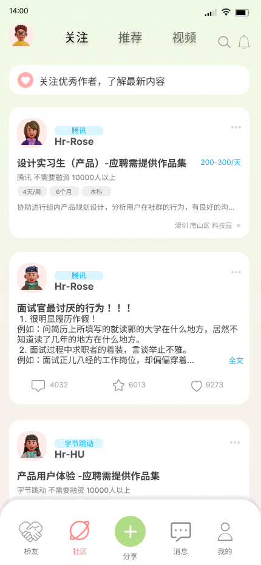
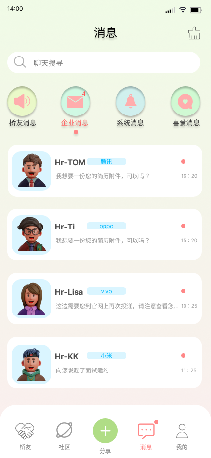
KNOWLEDGE CONNECTS GENERATIONS.慧桥希望让退休专业人士积累的经验继续被看见，也让正在寻找方向的求职者，获得更具体、更有温度的支持。
从选择身份到建立联系，再到求职沟通，设计围绕「人与人的连接」展开，将经验交流、社区分享与企业消息放进同一个移动端体验。
让每一段经验，都有新的去处。
从毕业生的经验缺口、退休专业人士的价值延续，到企业的人才需求，慧桥探索跨代互助的可能。
刚毕业的求职者可能难以回应企业对实践能力的要求；企业也难以找到适合岗位的人。设计关注两方之间的经验与标准差异。
退休并不意味着专业知识与分享意愿消失。熟悉的工作关系减少后，继续贡献、交流与获得认同成为新的需要。
设计背景与以下人物模型用于界定服务机会，尚不代表经过大样本验证的研究结论。
在具体问题中获得职业指导，提升实践能力，并与合适的企业建立联系。
分享多年经验，延续专业价值，收获成就感与更丰富的日常交流。
结合岗位技能需要、毕业生的专业知识与导师的实践经验，探索更合适的人才连接。
匹配与推荐为服务设计构想。
一个关于李老先生与毕业生张明的设想情境。
李老先生退休后依然热爱自己的专业；张明刚毕业，正寻找把理论转化为实践的方法。慧桥让两人发现彼此。
通过线上会议与线下聚会，导师分享行业经验，毕业生带来学术视角与新的想法。关系在一次次具体的交流中建立。
愿景是让不同年龄的人都找到自己的参与方式，让互助关系持续发生，而不止于一次求职咨询。
面试中遇到专业之外的问题；缺少相关实践经验，专业能力也需要进一步打磨。
找到心仪的工作；从退休专业人士那里学到有助于职业发展的知识与方法。
有时无聊、孤独；有分享欲，却缺少交流对象；仍觉得自己能够继续贡献专业能力。
用专业帮助年轻一代，满足交流与分享的愿望，并期待获得一定的收入。
沿着注册、领域确认、试谈匹配与企业对接，理解每一步的期待、疑问与情绪变化。
填写身份与简历，锁定希望发展的专业领域。
疑问：如何真实呈现自己？等待匹配结果，通过试谈判断经验是否适合。
期待 / 紧张：是否能得到帮助？双方互选，保留重新选择与反馈的空间。
担心：后续意见不合怎么办？修改简历和作品集，投递岗位、沟通并面试。
焦虑 → 舒心：获得认可与方向。身份选择与个人主页构成入口；桥友、社区、分享、消息与个人空间承接不同的行动。
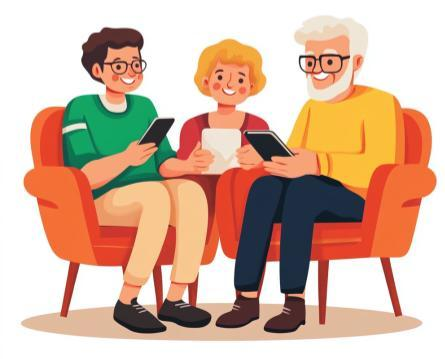
安静、光线充足的空间，舒适座椅、柔和灯光、植物与稳定 Wi-Fi。
职业咨询、技能分享和小型工作坊；信息墙展示招聘、培训与职业发展的资讯。
白板支持交流，茶水点心营造轻松氛围；志愿者协助组织，反馈箱与问卷帮助改进服务。
围绕三种身份，梳理各自的使用目标，让第一次进入产品的用户就能找到自己的位置。
寻找职业方向，获得经验建议，并与企业建立联系。
分享长期积累的知识与经验，在交流中延续专业价值。
与求职者沟通，交换简历信息，推进面试安排。
在进入产品时区分退休人员、求职人员与企业 HR，建立清晰的角色起点。
桥友、企业与系统消息分类呈现，让经验交流与求职进展各有归处。
通过简历更新、作品集修改与面试提醒，帮助用户关注下一步。
一次有效的帮助，需要让双方认识彼此、理解需求、安排交流，并在交流后继续行动。慧桥将桥友、社区、聊天与 WE TALK 邀约串联起来。
专业履历 · 经验分享 · 交流时间
职业问题 · 简历作品集 · 求职意向
招聘沟通与线下会面，连接职业机会与真实交流。
服务关系梳理依据现有设计；WE TALK 为原稿中的线下会面触点。
桥友卡片呈现职业方向与履历，支持“喜欢”和“再看看”。
对应触点 / 桥友匹配通过关注、推荐和视频内容，接触经验分享与职业信息。
对应触点 / 社区内容聊天中确认时间和地点，用邀约卡承接一次线下会面。
对应触点 / WE TALK沿用户旅程，把前台触点与服务支持串联起来。
| 阶段 | 注册与定位 | 匹配与试谈 | 线上 / 线下交流 | 企业对接 | 持续成长 |
|---|---|---|---|---|---|
| 用户行动 | 填写身份、专业领域 完善个人简历 | 浏览导师履历 试谈、收藏、互选 | 讨论具体问题 发出并确认邀约 | 修改简历与作品集 申请岗位、面试 | 回顾建议 继续学习与交流 |
| 可见触点 | 登录、身份选择 个人空间 | 桥友卡片 喜欢消息 | 聊天、文件记录 WE TALK 邀约 | 企业社区、短视频 HR 消息 | 系统提醒 学习总结 |
| 前台服务 | 呈现身份与领域入口 | 展示经验、需求 提供重新选择入口 | 确认时间地点 组织职业与技能活动 | 分享面试经验 沟通投递材料 | 呈现后续行动 收集交流反馈 |
| 后台支持建议 | 资料核验 隐私与权限管理 | 匹配规则与需求标签 关系状态管理 | 场地与志愿者协调 预约冲突与改期处理 | 岗位信息维护 申请状态同步 | 记录与反馈整理 服务质量跟进 |
| 改进机会 | 减少定位困惑 | 缓解等待与初谈紧张 | 处理不合适的匹配 让会面可确认 | 保持企业与桥友联系 | 让建议变成 可以继续的行动 |
后台支持为基于服务构想补充的蓝图设计，需在实际服务中进一步验证。
依据现有界面整理的体验结构，完整交互以 Figma 原型设置为准。
手机界面进入视野后，引线与说明依次展开。点击说明可聚焦对应位置。
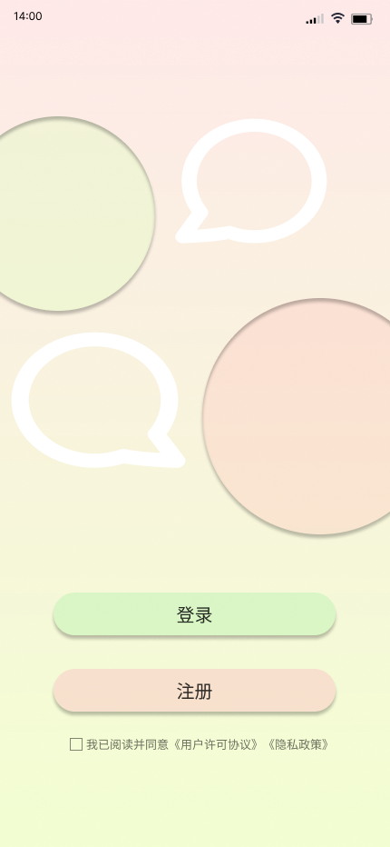
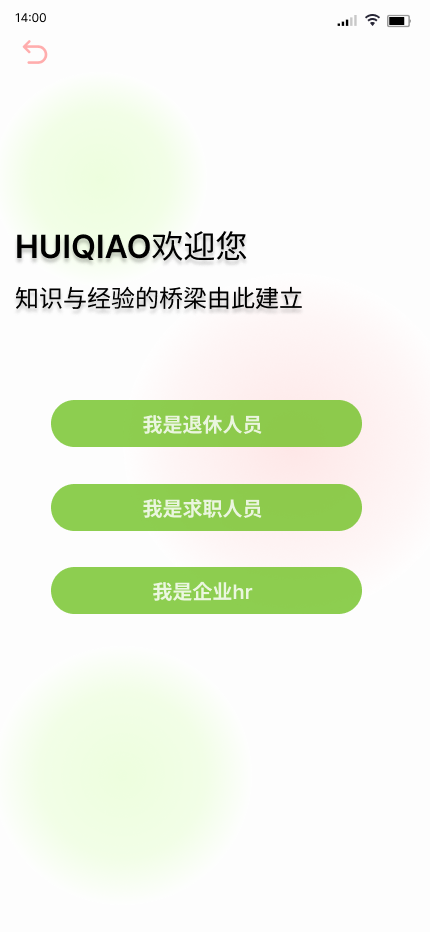
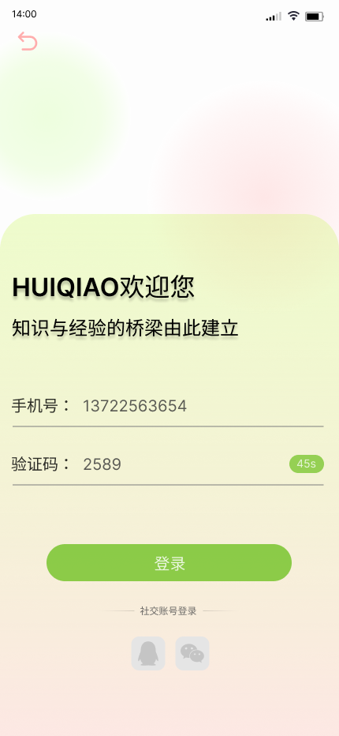
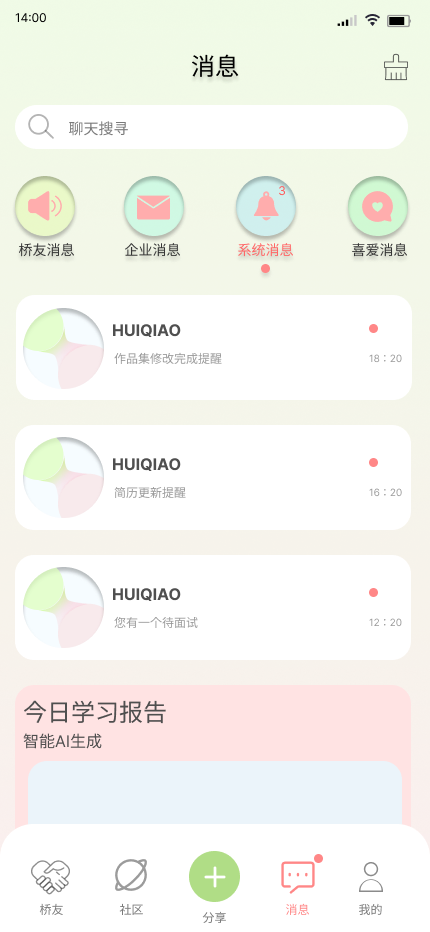
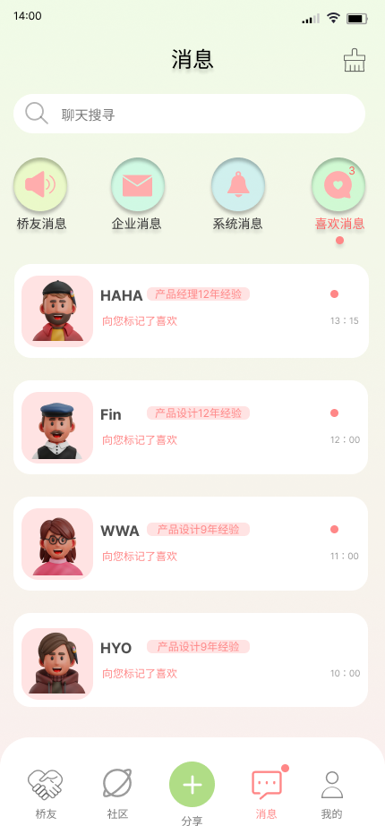
从身份选择到每一次消息往来，慧桥用熟悉的移动端结构承载不同角色之间的交流。
在同一个消息入口中，区分人与人的交流、企业沟通与系统提醒。
让经验交流拥有独立空间，方便找到正在沟通的桥友。
桥友履历提供认识的起点；关注、推荐与视频提供不同的探索方式，让经验与机会都能够被发现。
在聊天中商定时间，再通过 WE TALK 卡片确认会面。个人空间继续呈现邀约，帮助用户找回这次约定。
品牌与登录、身份选择、桥友匹配、社区浏览、消息分类和个人空间，共同组成慧桥的移动端体验。
原稿通过圆形元素、柔和色彩和卡片式信息组织，传达社区的亲和感。展示页面以克制的黑白灰衬托界面，让阅读聚焦于产品本身。
作品集展示页配色
沿用慧桥的跨代互助定位，将桌面端分成“发现桥友”和“个人工作台”：前者帮助探索，后者承载安排与跟进。
打开 Web 交互演示 ↗基于 App 概念新增的 Web 设计；演示内容不连接真实招聘或预约服务。
通过领域筛选，先找到能够回应当前需求的经验方向。
用专业背景、擅长主题与服务方式支持用户判断。
将交流安排、准备事项与求职进展带入个人工作台。
检查字号、对比度与图标含义，观察不同年龄用户能否顺利完成匹配和消息查找。
继续设计改期、取消、未回应与到场确认，让线下会面的服务过程更完整。
通过任务测试与交流回访，验证建议是否容易理解，是否能转化为下一步行动。